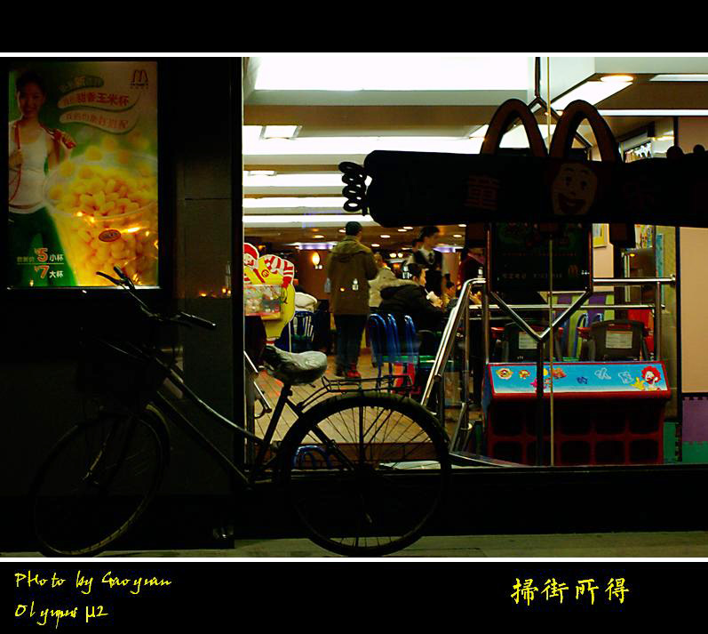

cybertron2012-12-27 05:204.08 分
操作性 4.00功能性 3.50美观性 4.50趣味性 3.50耐用性 4.00性价比 5.00
wyg200002010-01-31 22:314.42 分
操作性 5.00功能性 3.50美观性 5.00趣味性 3.50耐用性 4.50性价比 5.00
joythink2010-01-30 18:423.75 分
操作性 3.50功能性 3.00美观性 4.00趣味性 3.50耐用性 4.00性价比 4.50
simpleway2010-01-29 17:074.75 分
操作性 5.00功能性 4.50美观性 4.50趣味性 5.00耐用性 4.50性价比 5.00
raynelee2009-04-05 00:433.92 分
操作性 3.50功能性 4.00美观性 4.50趣味性 3.50耐用性 3.50性价比 4.50
清风雅鼠2009-02-25 23:184 分
操作性 4.50功能性 3.50美观性 4.50趣味性 2.00耐用性 4.50性价比 5.00
阳光下的小树2009-02-11 14:444.5 分
操作性 4.50功能性 4.50美观性 4.50趣味性 4.00耐用性 4.50性价比 5.00
yaler2008-09-22 12:404.25 分
操作性 4.00功能性 4.50美观性 4.50趣味性 4.50耐用性 3.50性价比 4.50
威尼斯2008-06-17 06:034.42 分
操作性 4.00功能性 4.00美观性 5.00趣味性 4.50耐用性 4.50性价比 4.50
撒尔摩2008-06-03 02:054.33 分
操作性 5.00功能性 3.00美观性 5.00趣味性 4.00耐用性 4.00性价比 5.00
liushukui2008-04-28 04:403.25 分
操作性 3.00功能性 3.00美观性 4.50趣味性 3.00耐用性 2.00性价比 4.00
azhestiga2008-04-27 03:273.92 分
操作性 3.50功能性 3.50美观性 5.00趣味性 3.50耐用性 3.00性价比 5.00
yzp0082008-03-24 16:124.17 分
操作性 4.00功能性 4.00美观性 4.00趣味性 3.50耐用性 4.50性价比 5.00
孤独的侠客2008-01-19 23:005 分
操作性 5.00功能性 5.00美观性 5.00趣味性 5.00耐用性 5.00性价比 5.00
johnlelva2007-12-25 01:193.92 分
操作性 5.00功能性 3.00美观性 3.50趣味性 4.00耐用性 3.00性价比 5.00
wangyq882007-10-07 11:294.5 分
操作性 4.00功能性 4.00美观性 5.00趣味性 4.00耐用性 5.00性价比 5.00
小而强大2007-08-17 20:564.42 分
操作性 4.50功能性 5.00美观性 4.00趣味性 4.50耐用性 3.50性价比 5.00
raptorz2007-08-10 21:304.75 分
操作性 4.50功能性 4.50美观性 5.00趣味性 5.00耐用性 4.50性价比 5.00
五十四军2007-02-04 21:064.58 分
操作性 4.50功能性 4.50美观性 5.00趣味性 4.00耐用性 4.50性价比 5.00
曾小曾2007-01-05 09:214.42 分
操作性 4.50功能性 4.50美观性 4.50趣味性 4.00耐用性 4.50性价比 4.50
铁骨2006-09-03 00:574.42 分
操作性 4.50功能性 4.50美观性 5.00趣味性 4.00耐用性 4.50性价比 4.00
李声2006-08-22 23:264.42 分
操作性 4.50功能性 3.50美观性 4.50趣味性 4.50耐用性 4.50性价比 5.00
archxw2006-07-30 17:143.08 分
操作性 3.00功能性 4.00美观性 4.00趣味性 2.00耐用性 2.00性价比 3.50
sult2006-06-24 03:472.58 分
操作性 2.50功能性 1.00美观性 4.00趣味性 2.00耐用性 3.00性价比 3.00
狮子头2006-05-18 14:494.75 分
操作性 5.00功能性 4.50美观性 5.00趣味性 5.00耐用性 4.00性价比 5.00
Topfear2006-05-09 17:114.92 分
操作性 5.00功能性 4.50美观性 5.00趣味性 5.00耐用性 5.00性价比 5.00
zlj2006-04-16 22:054.25 分
操作性 4.50功能性 4.00美观性 4.50趣味性 4.00耐用性 4.00性价比 4.50
zlj2006-04-16 22:03
小袋鼠2006-02-24 21:014.42 分
操作性 4.50功能性 4.00美观性 4.50趣味性 4.50耐用性 4.00性价比 5.00
doublefire552006-02-23 08:273.92 分
操作性 3.50功能性 4.00美观性 4.50趣味性 3.00耐用性 4.00性价比 4.50
旋转木马2006-02-16 15:354.17 分
操作性 5.00功能性 3.50美观性 4.00趣味性 4.00耐用性 3.50性价比 5.00
黑白一生2005-12-25 11:514.33 分
操作性 3.50功能性 4.50美观性 5.00趣味性 3.50耐用性 4.50性价比 5.00
兹兰苑院长2005-12-12 10:074.08 分
操作性 4.50功能性 3.00美观性 3.50趣味性 4.50耐用性 4.50性价比 4.50
Ivanzhong2005-12-12 05:584.5 分
操作性 4.50功能性 4.50美观性 4.00趣味性 4.50耐用性 4.50性价比 5.00
poppybrown2005-12-03 21:144.25 分
操作性 4.00功能性 3.50美观性 5.00趣味性 4.00耐用性 4.00性价比 5.00
非户2005-11-23 05:423.75 分
操作性 3.50功能性 4.00美观性 4.50趣味性 3.50耐用性 3.00性价比 4.00
navy1672005-10-07 21:093.83 分
操作性 3.50功能性 4.00美观性 3.50趣味性 4.00耐用性 4.00性价比 4.00
bruceshen2005-09-23 11:004.17 分
操作性 5.00功能性 3.00美观性 4.50趣味性 3.50耐用性 4.00性价比 5.00
大林和小林2005-07-12 16:094.42 分
操作性 4.50功能性 4.50美观性 5.00趣味性 4.00耐用性 3.50性价比 5.00
永远的初级泡菜2005-06-26 11:454.58 分
操作性 5.00功能性 4.00美观性 4.50趣味性 4.50耐用性 4.50性价比 5.00
cdfyx2005-06-23 17:294.08 分
操作性 4.00功能性 3.50美观性 4.00趣味性 3.50耐用性 4.50性价比 5.00
zhanghai2005-05-20 12:434.5 分
操作性 4.50功能性 4.50美观性 4.50趣味性 4.50耐用性 4.00性价比 5.00
大钱2005-04-21 15:034 分
操作性 4.00功能性 3.50美观性 4.50趣味性 4.00耐用性 4.00性价比 4.00
junku2005-03-22 16:364.42 分
操作性 4.00功能性 4.50美观性 4.50趣味性 4.00耐用性 4.50性价比 5.00
thy9600812005-03-09 20:364.5 分
操作性 4.50功能性 5.00美观性 4.00趣味性 4.50耐用性 4.00性价比 5.00
nnjiao2005-02-27 01:094.33 分
操作性 4.00功能性 4.50美观性 4.50趣味性 4.00耐用性 4.00性价比 5.00
gaoyuan2005-02-08 08:144.33 分
操作性 4.50功能性 4.00美观性 4.50趣味性 4.00耐用性 4.00性价比 5.00

littlezhubo2004-11-28 16:164.17 分
操作性 4.50功能性 4.00美观性 4.00趣味性 4.00耐用性 3.50性价比 5.00
why2002-04-11 14:434 分
操作性 4.00功能性 4.00美观性 4.00趣味性 3.50耐用性 4.00性价比 4.50
eudemon72002-04-10 22:204.42 分
操作性 4.50功能性 4.50美观性 5.00趣味性 4.00耐用性 3.50性价比 5.00
jesseli2002-04-10 09:444.92 分
操作性 5.00功能性 4.50美观性 5.00趣味性 5.00耐用性 5.00性价比 5.00